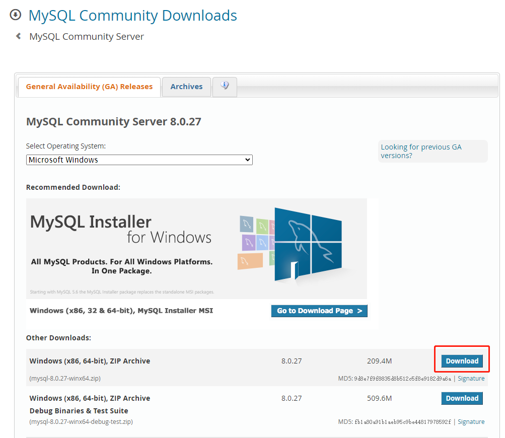
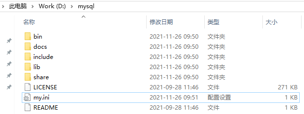
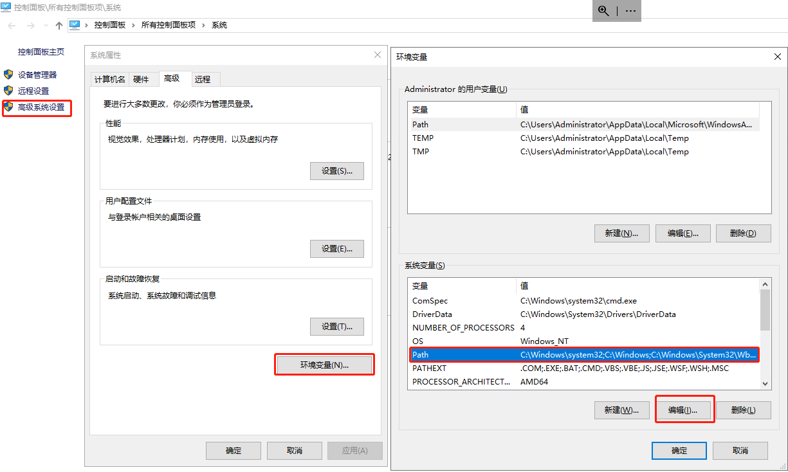
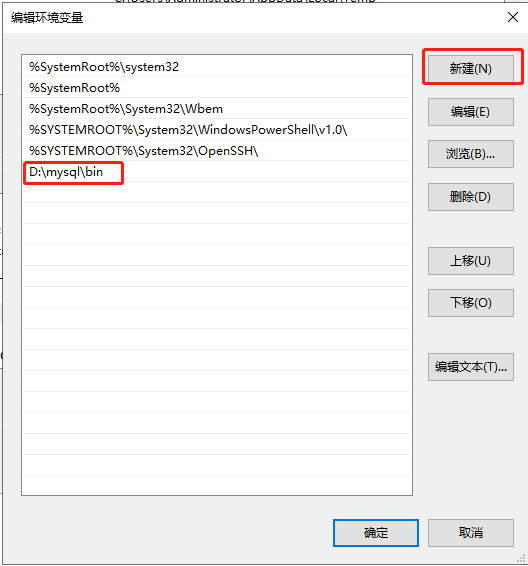
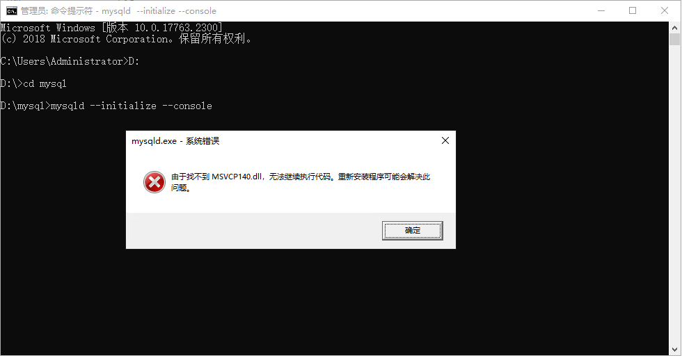
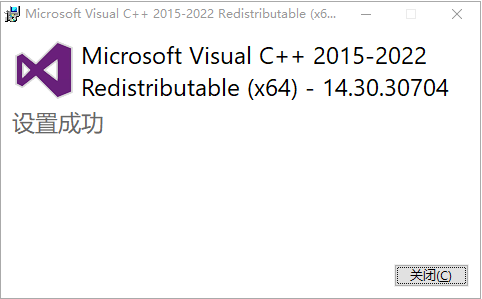
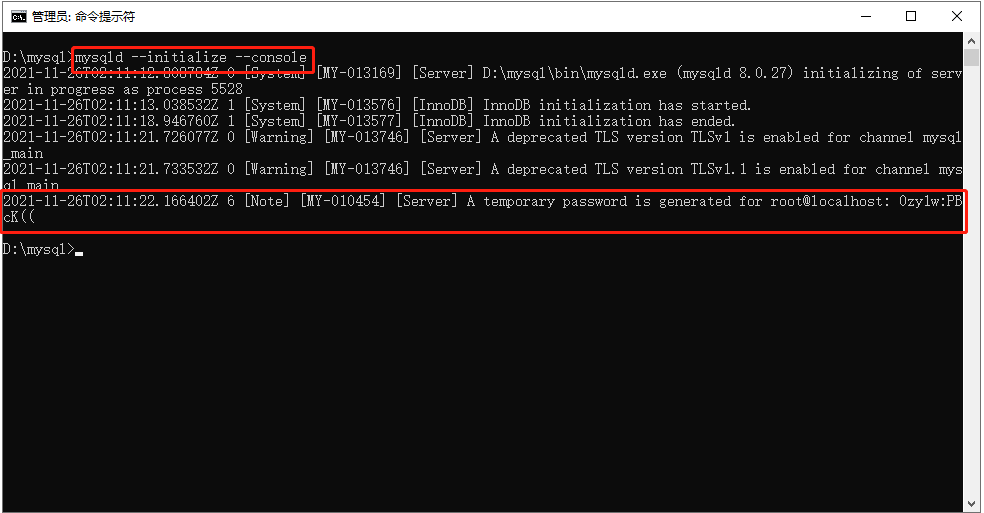
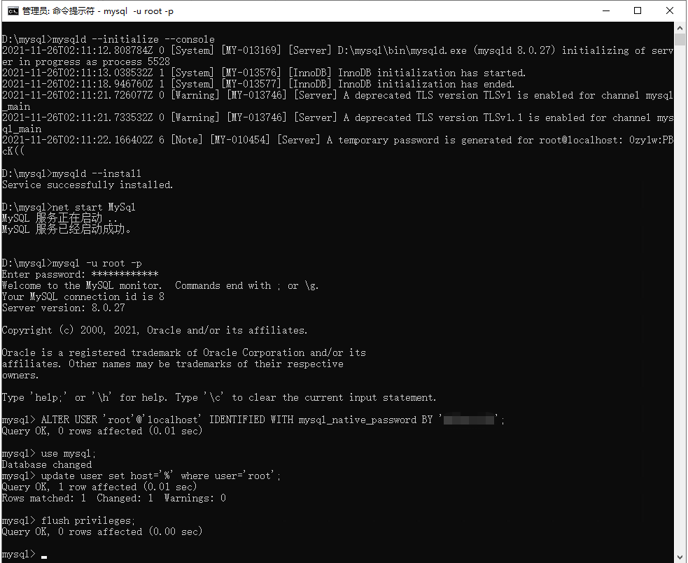
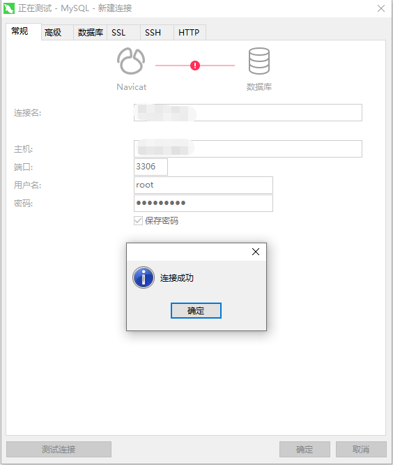

目录
- 下载MySql
- 配置文件
- 安装MySql
下载MySql
MySql下载地址
下载哪下图所示的文件

下载后,我们把文件解压到D:/mysql下面,如下图所示

配置MySql
我们在D:/mysql文件夹下新建my.ini
内容如下
1 | [mysql] |
注意:my.ini的文件编码最好用ANSI
注意:我们是把数据文件存放在D:/Database/目录,所以要在D:/盘下面新建Database目录
我们把D:/mysql/bin目录添加进环境变量
如下图


安装MySql
以管理员方式运行cmd
1 | #进入D:/mysql目录 |
第一次安装的时候,可能会出现很多
由于找不到 MSVCP140.dll，无法继续执行代码。重新安装程序可能会解决此问题
这是因为系统没有安装C++运行时环境,我们可以搜索”c++ redistributable”关键字,下载微软运行时
下载Visual C++ Redistributable Latest


在运行mysqld –initialize –console的时候,在输出的地方会显示root的初始密码
如下图,最后那个0zy1w:PBcK((就是root的初始密码

完整初始化命令显示如下图

到此,我们MySql就已经安装好了.
如果是在云服务器,要通过外网访问
那就要把服务器和云的网络都把3306端口打开.（不建议这样做，有安全风险）
这样我们就可以在任意地方访问MySql服务了
